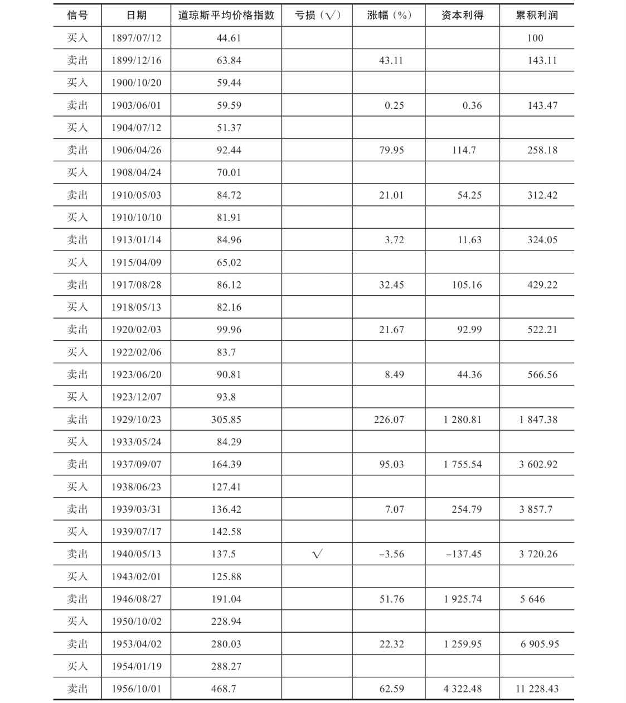
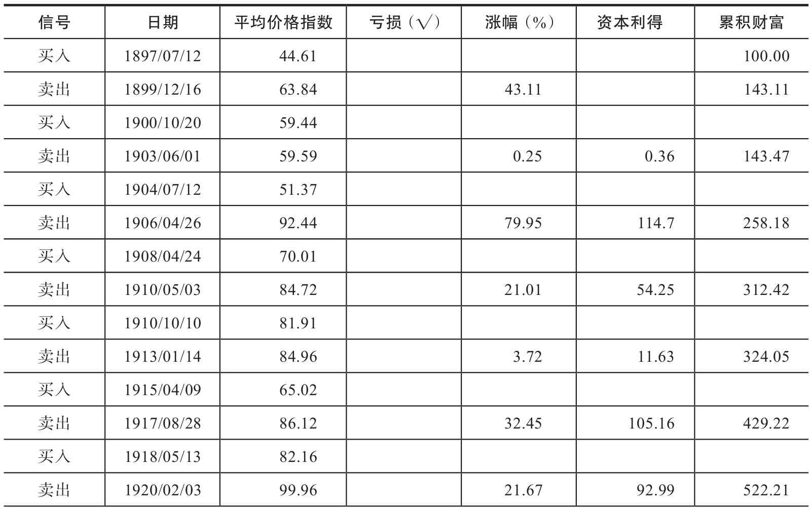
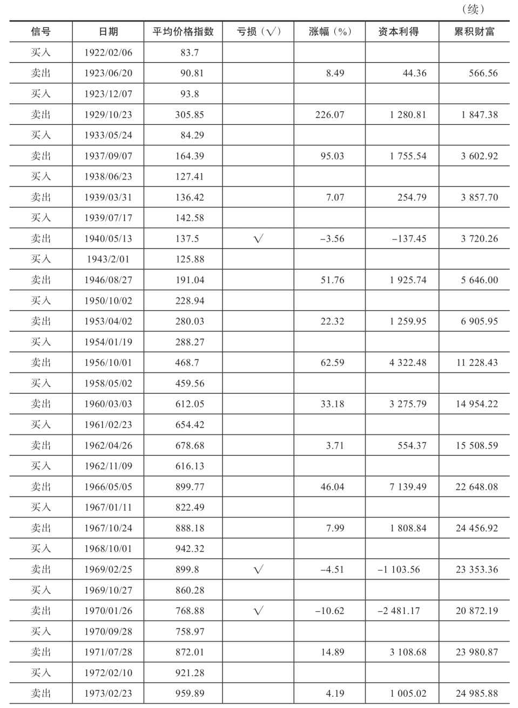
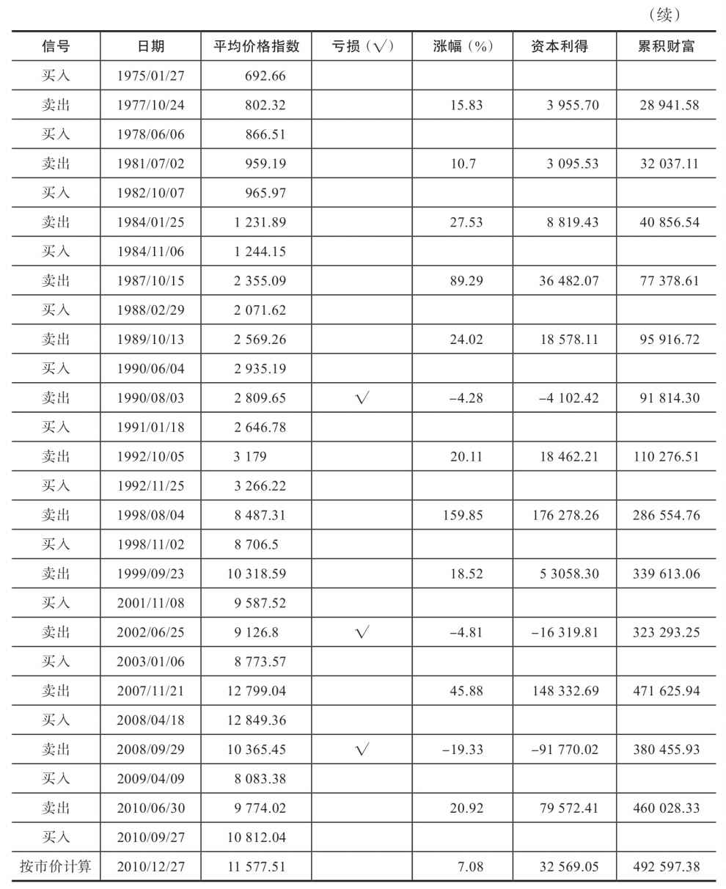
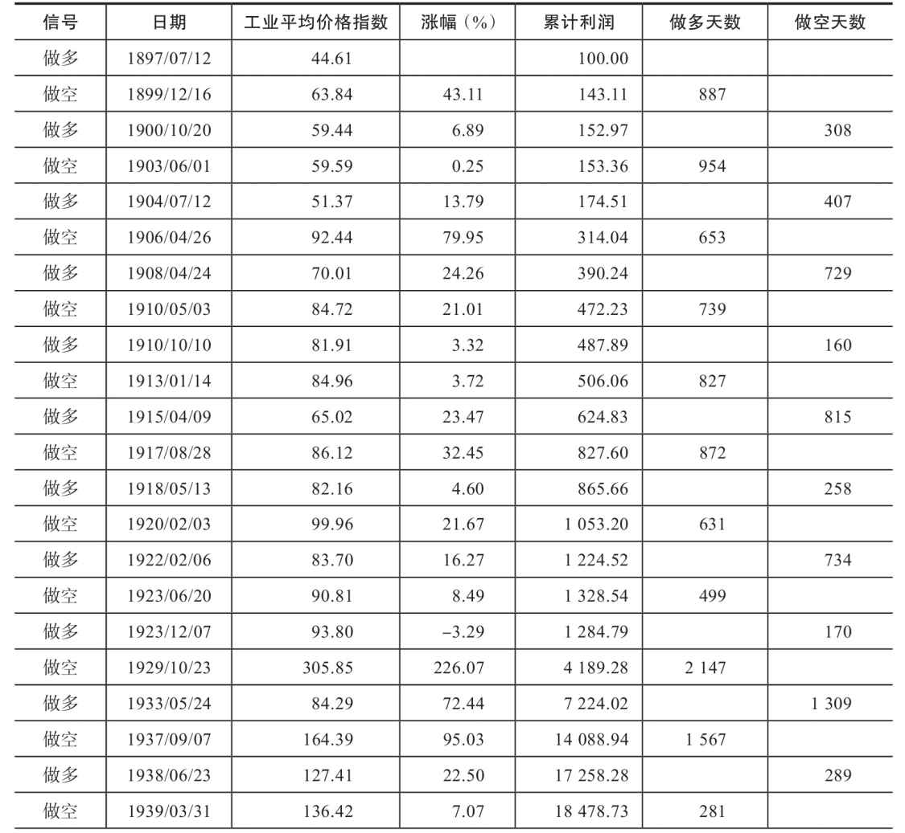
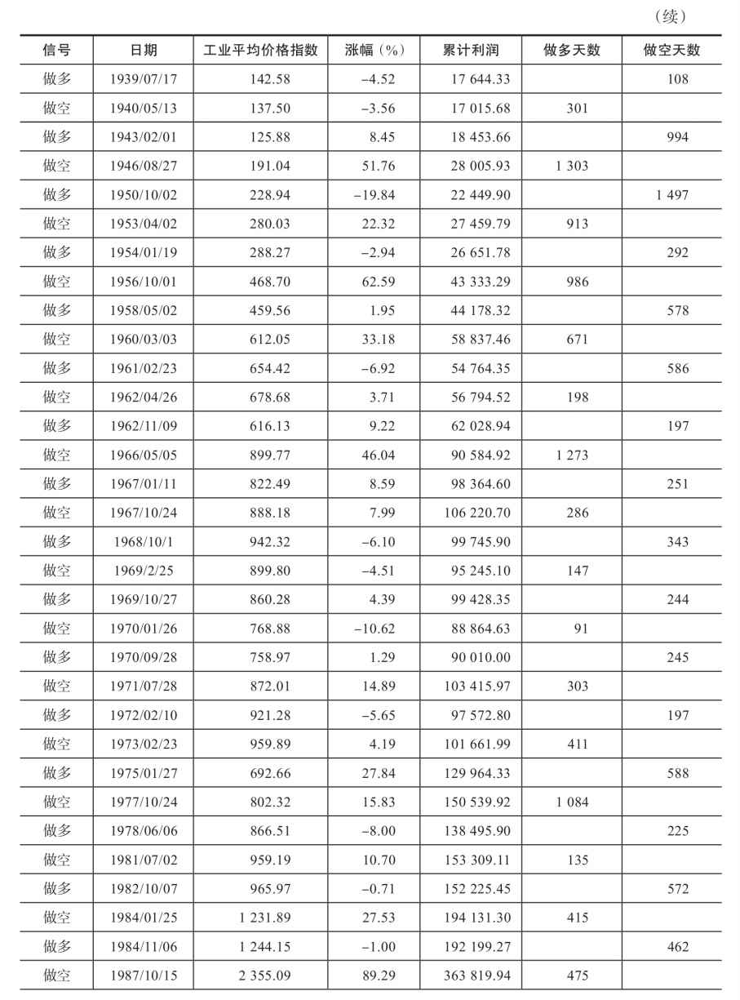
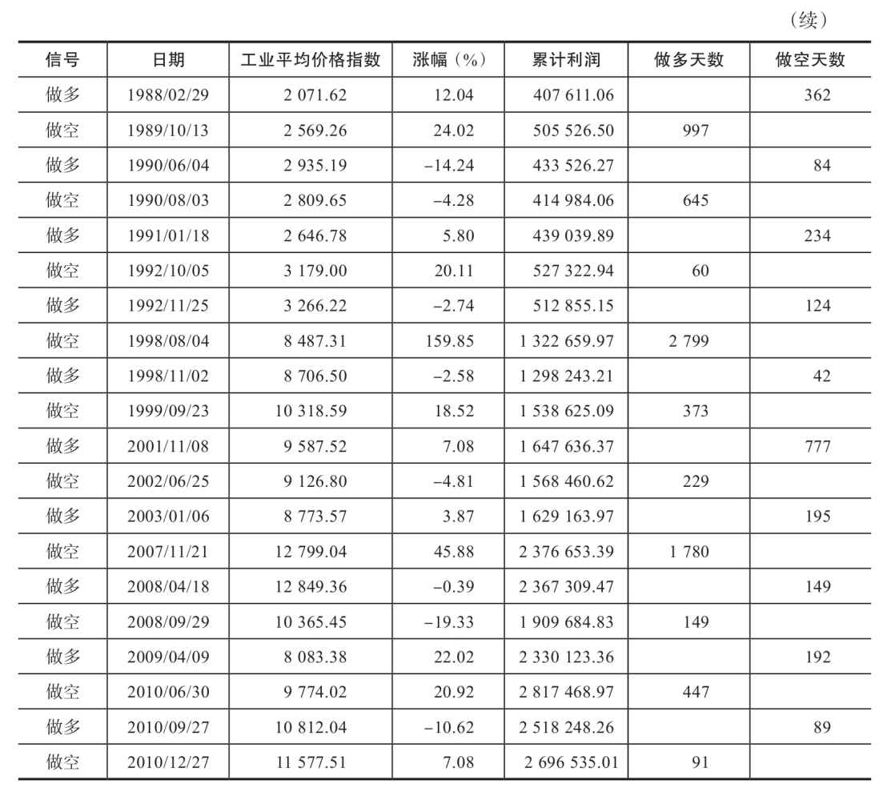

第4章 道氏理论的缺陷
第10版编者按：上一版的图2-9现已纳入附录A，并附有爱德华兹对道氏理论应用的详细解释。
我猜测读者们在读完前一章（第10版编者按：第9版中的第4章，现在已纳入附录A）之后长舒了一口气，因为总算读完了一个艰涩难懂又枯燥无趣的主题。有人此刻甚至希望道氏理论从来没有出现过。一定还有人会指出道氏理论中的缺陷，并有很多问题要问。在我们讨论更加有趣的图表之前，最好先来回答一下这些问题。
首先，让我们来面对道氏理论派常面临的“马后炮”指控。只要道氏理论家们意见相左，这种指控就会一直存在。不幸的是，他们总是意见相左。即使是最有经验的、最仔细的道氏分析师有时都会因为后续市场的某些运行而改变之前对某一观点站不住脚的解读。他们并不否认这一点，但同时也认为长期来说这种暂时的误读对整体理解并无大碍。很多分析师定期发布自己的观点，且请你参阅他们在某个事件之前、之中及之后所发表的书面观点和建议。关于第9版第4章（现在已纳入附录A），如果读者愿意去查阅记录的话，会发现那一章的解读（除了那些后来补上的评语）正是当时最受肯定的道氏分析师的观点。
第9版编者按：当代，就声望而言，理查德·拉塞尔（Richard Russell，dowthe-oryletters.com）也许要算是佼佼者，其他不少道氏理论家（想把他们归队就像是要把猫拢聚成群）也厕身其中，如果我们要向（古罗马的）神圣鸡骨求教的话，那就一定要算上杰克·尚内普（Jack Schannep，thedowtheory.com）和理查德·莫罗尼（Richard Moroney，dowtheory.com）。罗伯物W.科尔比（Robert W.Colby，robertwcolby.com）目前正就道氏理论进行引人注目的研究。请注意，在这里，神圣的是鸡本身，而骨头则是次要的。
4.1 滞后的道氏理论
客观来说，认为道氏理论有些滞后更符合逻辑。也有些人出言不逊，说道氏理论让投资者赚不到市场长线涨幅的前1/3和后1/3，而有些时候，市场并没有中间这1/3。具体来说：道琼斯工业平均指数在1942年这一轮牛市开始时是92.92点，1946年时升至212.50点，上涨了119.58点。但如果严格遵循道氏理论，直到125.88点时才可以买入，而且要等指数已经回落到191.04点时才可以卖出，也就是说最多能获利65点，刚超过整个涨幅的一半。此言不假，但试问谁能正好在92.92点买入，然后一直持有数年，并正好在212.50点抛出呢？实际上，能按道氏理论的原则投资并获得指数涨幅一半的收益的投资者，恐怕不超过10个。
更有说服力的是理查德·杜兰特（Richard Durant）的这张表（见表4-1）。此表模拟的是严格遵循道氏理论交易道琼斯平均指数60年的交易记录。如果一个投资者有100美元，他从1897年7月12日开始投资道琼斯工业平均指数，且仅在牛市被确认时买入，并在长线趋势变化被确认时卖出，如此反复，60年后会怎样？
简单来说，只要按照上述原则交易道琼斯工业平均指数，那么1897年投资的100美元到1956年就会增值为11228.43美元。这段时间内，投资者应该一共交易了30次（买卖各15次），即平均每两年交易1次。
这份模拟交易的记录并不是完美无瑕的。记录显示，其中有1笔交易亏损，3笔交易买价高于前一次的卖价，这是个合理的结果。此外，这份记录没有考虑佣金和交易税，也没考虑分红。如果考虑分红，那么再投资的金额也会相应增加。
表4-1 道氏理论的60年模拟交易记录

还有一些投资者认为：应该一旦看准了某只股票就买入并长期持有。让我们比较一下这两种理论在实际操盘中的结果：在相同的时段，假设这些投资者仅在工业平均指数跌至谷底时买入，并在其回升到峰值时卖出，即在1896年8月10日股价跌至29.64美元时入场，60年之后，当股价在1956年4月6日回升至521.05美元时离场，他们的财富会由原先的100美元增值为1757.93美元。然而如果严格按照道氏理论发出的信号操盘，投资者可以赚取11228.43美元，两者差异显而易见。
编者按：道氏理论的这份模拟记录在表4-2中更新至2010年。为了区分我和爱德华兹的研究成果，本表记录未做修改。
4.2 道氏理论并不是绝对可靠的
道氏理论可靠与否取决于投资者的解读能力。尽管如此，历史交易数据已经充分证明了道氏理论的有效性。
4.2.1 道氏理论常受到投资者质疑
这种批评有一定道理，但也不全对。对于市场的长线趋势，道氏理论永远可以给出一个方向。在每一次长线趋势刚刚开始时，这个方向在一段较短的时间内会是错的。有时候，一个优秀的道氏分析师会说：“尽管道氏理论显示长线趋势仍是看涨，但涨幅已经达到了危险的高度，出于谨慎，我不建议你追涨。现在买入可能已经太迟了。”
但是，分析师给出与道氏理论相悖的建议通常是因为他们内心无法接受道氏理论的基本信条：平均指数反映了一切新闻和数据。他们对股价应该如何变动有自己的想法，而这种想法无法和道氏理论统一。但道氏理论大部分情况下都是对的。
另外一些投资者质疑道氏理论完全是因为耐心不足。有时候，连续几周或几个月（例如横盘走势形成的时候），道氏理论都无法给出明确的信号。这时，活跃的交易者就会按捺不住，对其进行指责。但不论是在股市还是其他地方，耐心都是一种美德。实际上，要想避免犯错，耐心是必不可少的条件。
4.2.2 道氏理论无法帮助中线投资者
毫无疑问，道氏理论无法指导追逐中线趋势的投资者，因为它几乎无法预测中线趋势的变化。话说回来，如果能把握好中线，就能比长线趋势赚更多的钱。一些投资者在道氏理论的基础上发展了其他分析中线趋势的原则，但结果都不尽如人意。本书就此提出了更好的方法。
道氏理论的目标就是预判长线趋势的方向。这一点极为重要，因为大多数股票都是跟随长线趋势的。除了构成平均指数的成分股外，道氏理论无法告诉投资者该买哪一只个股。这也是本书余下章节会讨论的另一个问题。
编者按：这个批评已经过时，不适用于现代市场了。
道氏理论无法荐股的问题在爱德华兹的时代的确存在。但在现代市场中，投资者可以购买一些复制道琼斯平均指数的替代工具来解决这一问题，如思柏达道琼斯工业平均指数交易所交易基金（DIA）（见第15章）。
4.3 道氏理论在20世纪和21世纪的应用
表4-2（表4-1的延续）显示，遵循道氏理论的投资者能比信奉“买入并持有”的投资者获得更丰厚的回报。1897年投资100美元后，道氏投资者的财富在2010年12月31日已达到492597.38美元，并维持多头仓位。表4-2列出了交易细节，包括2000年的崩盘。这张表证明了技术派的优越性，第5章将介绍另一种强大的技术分析方法。
如果采用“买入并持有”的策略投资100美元，假定投资者在指数为29.64点的低位买入，并在2010年12月31日收盘时卖出，那么这100美元会增值为25952.72美元。
在这里我想感谢TheDowTheory.Com的杰克·施纳普（Jack Schannep），表4-2的数据来自他的网站（http://www.thedowtheory.com ）。施纳普在这个网站上清晰地阐述了道氏理论，并模拟了道琼斯平均指数113年来的变动，其中甚至包含了爱德华兹没有纳入研究的数据。
有些人会指出本表数据和其他人记录的数据之间存在细微差异。这是由于记录数据的道氏理论派之间会出现意见分歧。并不是所有人都能对信号出现的时点或信号的意义形成一致看法（例如，有些人认为1956年10月1日的信号应该发生于1957年10月7日）。理论派最终得出的判断和他们对于细节的解读是密不可分的。道氏理论并不是一套100%客观的算法，就像图表分析不能被简单地看成客观的算法一样。（在这里打趣道氏理论是因为我本人也一直是这套理论的追随者，所以清楚这些问题的存在。对于不了解道氏理论的人来说，随意嘲讽就不太合适了。）
简而言之，投资者在道氏理论确认牛市时买入道琼斯工业平均指数，并在该理论确认熊市时卖出，且每次都满仓操作，那么1897年投资的100美元就可以升值为492597.28美元。
到2010年年末，技术派投资者能赚到这么多钱，远高于“买入并持有”型投资者的25952.72美元。而且，他们还能成功地避开熊市。
无论道氏理论是否还适用于今天的整体市场，有一点不容置疑，那就是道氏理论仍适用于相应的市场板块，而该市场板块的市值为纳斯达克市场的5倍（见表4-2）。
表4-2 道氏理论的113年模拟交易记录



马克·吐温曾说，每个人都在谈论道氏理论，但没有人真正深入研究它。吐温的原话也许并非确切如此，但应该差不多。我和金门大学的布赖恩·布鲁克（Brian Brooker）及马特·马伦斯（Matt Mullens）一起，对上述记录进行了一系列研究。此处列出的是我们的若干研究结果，摘自《圣鸡、圣杯与道氏理论》（Sacred Chickens，the Holy Grail and Dow Theory）一书。
按照道氏理论来投资显然具有独特的风险特征，这里我想赘言几句。与遵循道氏理论的投资者相比，“买入并持有”型投资者不仅获利更少，还必须承担更高的风险。乍一看，表4-3中反向投资者获得的全部利润代表了“买入并持有”型投资者实际承担的风险。可是只要仔细想一下就能发现，“买入并持有”型投资者实际承担的风险是以特定时期内的最大跌幅来衡量的。这个问题无须理论探讨，因为有实证数据。
表4-3 道氏理论在多空交替策略下至2010年的表现



记录显示这些风险大得惊人。道指从2000年的顶部到2002年的底部，跌幅达到39%；1987年（里根执政期内），道指跌幅达到了41%；1929～1932年（胡佛执政期内），道指跌幅达到了89%。这样的惨状现在不太可能再现，因为政府会果断出手稳定市场。
为了将风险最小化，你当然可以远离股市，也可以尝试把握趋势——或至少不看错趋势。事实上，遵循道氏理论的投资者很多时候都持币观望，这是由道氏理论的本质决定的，自然也有助于降低风险。1897～2010年的总共41444天里，遵循道氏理论的投资者有14378天（约37%的时间）都保持空仓，他们的资金也许存放在储贷机构（S&L）里生息，这些利息未计入上述“纯粹”研究中的累计利润。
表4-3中的数据显然不只反映了做多的情况。我的信条是，只做多或只做空是不明智的。按照这一信条，我计算了多空交替策略的累计利润。毕竟，市场起起落落，多头平仓就是空头建仓的良机。单纯做多道指固然就能赚取可观的利润（至2010年达492597.38美元），但交替操作则能带来数倍于单纯做多的利润（2696535.01美元）。
读者或许已听出了弦外之音。对大多数投资者而言，最重要的其实是长期获利。但在互联网时代的即时文化和快速致富心理下，除了一些非常富裕、非常聪明的人，已经没有多少人有耐心做长线投资了。也许本书仍受到一些老读者的关注，当然作者也希望能再吸引一批新粉丝。